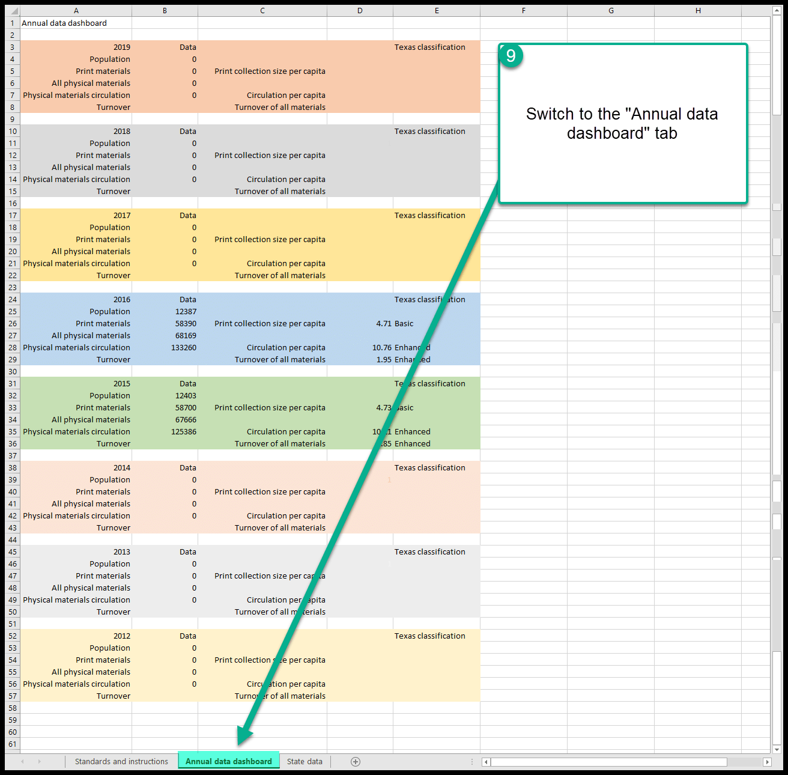
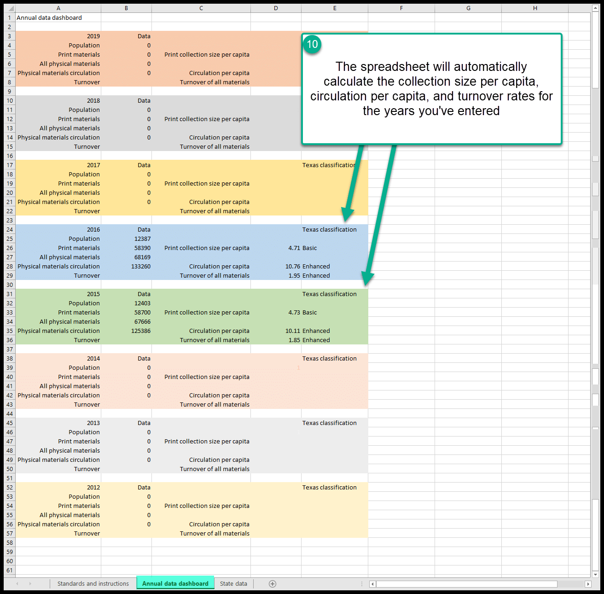

Collection statistical analysis tools¶
The following tools were designed to accompany the program “Collection development 2.0 (with Gail Santy from CKLS)” which occurs on March 25, 2021.
The general principles in stated in this program are:
- A larger collection is not necessarily a better collection
- Collections are created to meet the needs of the community
- The collection must remain relevant and useful to the library users
- Analysis provides insight into collection age, strengths, and weaknesses
- Best practices indicate an analysis should happen about every five years
The following tools are designed to help library staff easily organize and analyze statistical data from the state library annual report and from reports in Next Search Catalog.
Reports¶
Report 2731¶
Report 2731 is also named “GHW - Flexible Shelflist Report.” This report will generate a shelflist for items in Next Search Catalog that includes:
- Home library (and holding library)
- Permanent location (and current location)
- Item type
- Collection code
- Call number
- Author
- Title
- Publication year (264$c)
- Date added
- Date last borrowed
- Date last seen
- Checkout and renewal counts
- Number of copies - at your library
- Number of copies - system wide
Tool #2 uses data from this reports
Report 3475¶
Report 3475 is also named “GHW - Average age of entire collection with link to Median Age of entire collection.” This report will show you the average age of the entire collection at your library based on the publication date in the 264$c. If the 264$c is blank or contains non-numeric characters, those records will not be figured into these calculations. However, if the 264$c has incorrect data, that data may affect the results for this report.
Report 3476¶
Report 3476 is also named “GHW - Median age of entire collection (see instructions).” This report cannot be run on its own. To access the data from this report you must run report 3475 and then click on the link that says “Link to median age report” in the far right hand column.
Report 3483¶
Report 3483 is also named “GHW- Turnover in the previous 12 months by location and item type.” This report will show you the turnover rate in the previous 12 months by location (Adult/Childrens/Young adult) and item type. It will group Doniphan County and Prairie Hills School District together as separate libraries and by the entire organization.
Report 3484¶
Report 3484 is also named “GHW- Turnover by location and collection code .” This report will show you the turnover rate in the previous 12 months by location (Adult/Childrens/Young adult) and collection code. It will group Doniphan County and Prairie Hills School District together as separate libraries and by the entire organization.
Other reports in progress¶
There are several other reports in progress including “Average age by item type,” “Median age by item type,” “Average age by collection code,” “Median age by collection code,” “Turnover rate last month by item type,” “Turnover rate last month by collection code.”
Spreadsheet tool #1¶
This tool is an Excel spreadsheet you can use to calculate print collection size per capita, circulation per capita, and annual turnover. This spreadhseet calculates data based on data your library has submitted to the State of Kansas in the annual library survey.
State survey data can be found at KS Statistical Data & Reports
Spreadsheet tool #1 (state.data.xlsx) can be found at state.data.xlsx
To use this tool:
Download the state.data.xlsx and save it to your computer
Go to KS Statistical Data & Reports and download a copy of the full data report for any year between 2012 and 2019
Open state.data.xlsx on your computer and navigate to the tab that says “State data”
Open the file from KS Statistical Data & Reports on your computer
Find your library in the report from the state library, hightlight that entire row, and type “control C” to copy the entire borrowed
Highlight the first cell in the row for the year you’ve selected on the “State data” tab in state.data.xlsx

Click on the clipboard and select “Paste values” to paste the data from the state report into state.data.xlsx
Continue to add any data you want from other years as necessary for any year between 2012 and 2019

When you’ve added all of the data you’re interested in, switch to the “Annual data dashboard” tab

- The spreadsheet will automatically calculate the print collection size per capita, circulation per capita, and annual turnover

** Please note that all of the formulas in this spreadsheet and its structure are locked. The password to unlock the formulas can be found on the “Standards and instructions” tab. Feel free to modify and adapt the spreadsheet as you see fit. However, please recognize that, if you modify the spreadsheet or any of its formulas, none of the NEKLS staff will be able to help you fix fix problems with a spreadsheet that you have modified yourself.
Spreadsheet tool #2¶
This tool is an Excel spreadsheet you can use to calculate average age of a collection, median age of a collection, and general age of a collection. This spreadsheet relies on Next Search Catalog report 2731.
To use this tool:
Download the local.data.xlsx and save it to your computer
Run Next Search Catalog report 2731 for your library. You can use any parameters you want. To do your full collection, I recommend choosing your home library, changing the default for “Item added between date1:” to 01/01/1900 and leaveing all other settings on their defaults.
Once the report has run, download the results to a .csv file and open it

Open local.data.xlsx and navigate to the “Collection data (2731)” tab
Highlight the data you want to evaluate from the csv file for report 2731 and type “control C” to copy the data to the clipboard

Select cell A1 on the “Collection data (2731)” tab in local.data.xlsx and paste the data from report 2731 into local.data.xlsx
Once you’ve added all the data you wish to evaluate to the “Collection data (2731)” tab, switch to the “Weeding data dashboard” tab. The spreadsheet will automatically calculate the lowest publication date in the collection, the highest publication date, the average publication date, the median publication date, and tell you how many items in the collection are less than 5 years old, how many are 6-10 years old, how many are 11-15 years old and how many are more than 15 years old. It will also show you data based on date added, date last borrowed, and date last seen.
** Publication date data is based on the 264$c field in the title’s Marc record. If the data is missing, or contains alphabetical characters, the date will be ignored. If the data has been incorrectly entered, that will affect the calculations made by this spreadsheet.
*** Please note that all of the formulas in this spreadsheet and its structure are locked. The password to unlock the formulas can be found on the “Standards and instructions” tab. Feel free to modify and adapt the spreadsheet as you see fit. However, please recognize that, if you modify the spreadsheet or any of its formulas, none of the NEKLS staff will be able to help you fix fix problems with a spreadsheet that you have modified yourself.